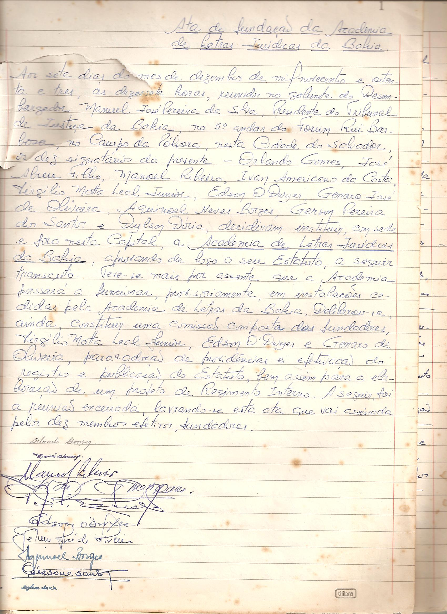

A ORIGEM DA ACADEMIA

DEPOIMENTO DO ACADÊMICO MANUEL PEREIRA
por ocasião das comemorações do Jubileu de Prata da Academia em 2008
A Academia de Letras Jurídicas da Bahia completará, no dia 07 de dezembro do ano corrente, 25 anos de fundada. Tendo sido eu o idealizador de sua fundação, o Presidente Antonio Carlos Nogueira Reis me solicitou um depoimento sobre a origem da Academia, não só para o conhecimento público, mas também de alguns ocupantes atuais de suas 40 Cadeiras.
No período do meu mandato (1983 / 1984) na Presidência do tribunal de Justiça da Bahia foi que me ocorreu a idéia de fundar, em nosso Estado, uma academia de letras jurídicas, sob a inspiração da Academia Brasileira de Letras Jurídicas que havia sido constituída no Rio de Janeiro.
Àquela época, constatei que apenas três academias funcionavam em outros Estados. Pensei então em convidar alguns dos mais categorizados juristas da nossa terra para, juntos, amadurecermos a idéia de fundar uma academia de letras jurídicas na Bahia. Atendendo ao meu convite, reuniram-se, no próprio gabinete da Presidência do Tribunal, os eminentes professores Orlando Gomes, da Universidade Federal da Bahia, Manoel Ribeiro, da Universidade Católica do Salvador, e o ilustre procurador Ivan Americano da Costa, membro do Ministério Público do Estado e integrante da Ordem dos Advogados do Brasil, Seção da Bahia. Decidiu-se então, logo na primeira reunião, criar a Academia de Letras Jurídicas da Bahia.
No mesmo gabinete, e sempre sob a esclarecida direção do Prof. Orlando Gomes, nos reunimos outras vezes para programar as providências iniciais, inclusive a elaboração do Estatuto e do Regimento da futura Academia.
Para constituir o quadro inicial dos dez fundadores foram escolhidos e convidados sete conceituados nomes das letras jurídicas da Bahia: Aquinoel Neves Borges, Dylson Dórea, Edson Freire O'Dwyer, Genaro de Oliveira, Gerson Pereira dos Santos, José Abreu Filho e Virgílio da Motta Leal Júnior, sendo escolhido para secretariar os trabalhos dessa Comissão inicial o Professor Genaro de Oliveira.
Cumpre esclarecer que, dada a minha condição de idealizador e coordenador dos trabalhos iniciais, abdiquei de' figurar entre os dez fundadores da Academia. Mas a minha decisão só foi aceita com a aprovação de uma proposta do Professor Orlando Gomes para que eu ocupasse a sua 11ª Cadeira. Foi então fundada, no dia 07 de dezembro de 1983, a Academia de Letras Jurídicas da Bahia e aprovado o seu Estatuto, lavrando-se a respectiva ata, subscrita pelos dez fundadores acima nomeados. E obedecendo ao que dispõe o parágrafo 2º do artigo 3º do Estatuto, os dez fundadores escolheram mais dez juristas e, todos juntos, escolheram outros dez, completando-se assim o quadro inicial de trinta acadêmicos, que tomaram posse em sessão solene realizada no dia 21 de agosto de 1984, sendo o Prof. Orlando Gomes eleito o primeiro presidente da Academia. Tomaram posse naquela solenidade, além dos dez fundadores e de mim, ocupante da 11ª Cadeira, mais os seguintes acadêmicos: Josaphat Marinho, Dorival Passos, Washington Trindade, Elson Gottschalk, Antonio Theodoro Nascimento, Sylvio Santos Faria, Rubem Nogueira, José Joaquim Calmon de Passos, Nelson Sampaio, Renato Mesquita, Deraldo Brandão, Pedro Manso Cabral, Hylo Gurgel, Álvaro Peçanha Martins, Oldegar Franco Vieira, Fernando Pinto de Queiroz e Oswaldo Velloso Gordilho. Os ilustres professores Mário Barros e Adalício Nogueira, igualmente escolhidos para integrarem esse grupo inicial de trinta acadêmicos, não chegaram a tomar posse em suas Cadeiras.
Posteriormente, cumprindo-se a mesma regra estatutária do art. 3º, § 2º, foram escolhido mais dez juristas para completar o quadro de quarenta acadêmicos, os quais tomaram posse no dia 11 de junho de 1985. São eles: Lafayette Pondé, Adhemar Raymundo da Silva, Hermano Machado, Raymundo Laranjeira, Pinho Pedreira, Jenner Barreto Bastos, Paulo Furtado, Amâncio José de Souza Netto, Wilde Oliveira Lima e José Augusto Rodrigues Pinto.
Nestes seus 25 anos de existência a Academia teve os seguintes Presidentes: Orlando Gomes (1984/1986), Álvaro Peçanha Martins (1986/1988), Josaphat Marinho (1988/1990), Luiz de Pinho Pedreira da Silva (1990/1992), Aquinoel Neves Borges (1992/1994), Manuel José Pereira da Silva (1994/1996), Lafayette de Azevedo Pondé (1996/1998), José Augusto Rodrigues Pinto (1998/2000), Antonio Carlos Araújo de Oliveira (2000/2002), Genaro José de Oliveira (2002/2004) e José Antonio Cezar Santos (2004/2006), estando em curso o mandato (2006/2008) do atual Presidente Antonio Carlos Nogueira Reis.
Em remate, merece ser registrado que, não obstante dispor o artigo 6º do Estatuto que os Presidentes são reelegíveis, em face do princípio da alternância de poder este dispositivo jamais foi exercitado, objetivando possibilitar o exercício da presidência pelos demais acadêmicos.
Manuel Pereira
Titular da Cadeira nº 11